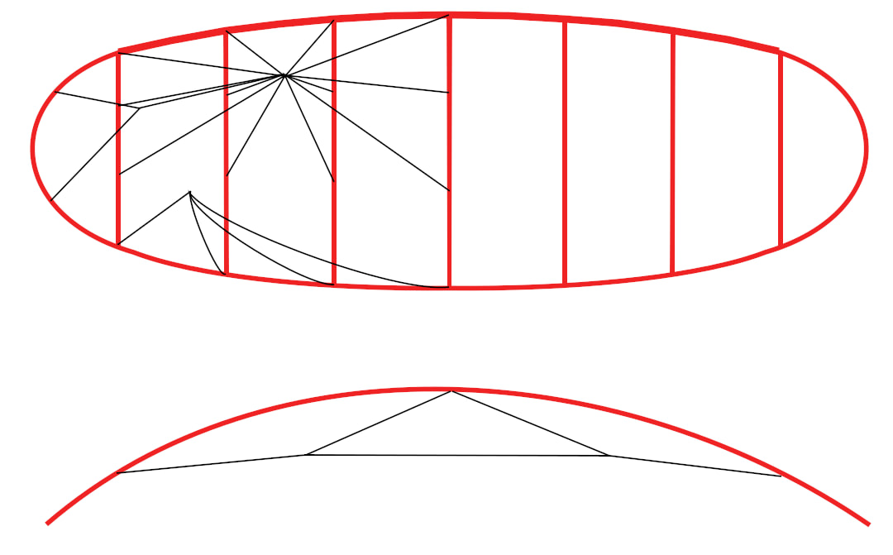

Here we are talking more about a new technology than about a new kite. This technology can apply to many kite shapes and even to other markets as inflatable tents, paragliding...
The kite I propose here shows some of the possibilities of this technology but it is possible to make a low aspect ratio C-kite, just replacing the existing frame, a mono skin kite where you remove a part of its LE and replace it by a single tube, a high aspect ratio flat kite that will compete with the best ram air kites for a third of the price, or new shapes that were not possible with the previous technologies.
For example it is possible to add winglets to make the kite auto-zenith.
It can have no struts and some bridles or 5-7 struts and no bridles on the canopy, only on the frame.
Playing with different diameters and different fabrics, you can get the strength or the curvature you wish.
By placing a simple ring of small diameter around a tube, you can fold it at 90° or whatever angle you need without have to make two separate struts.
Here is a proposed design for .
The pressure can be 10 bars as well as 2. Diameters will be different obviously.
So, designers, just chose what kind of kite you want to bring to the market and play with hoses !

Put one or two span lines to keep the shape of the kite (front view) as you wish it.
When in the water, in order to avoid that one side of the kite becomes totally flat and the other one too curved, I put additional lines tied to the center of the LE
When in the water, in order to avoid that one side of the kite becomes totally flat and the other one too curved, I put additional lines tied to the center of the LE
This invention has not been protected (except from predators by being published) and is offered in an open-source spirit. Brands are welcome to use it.